Texturas
Una vez realizado el ensamblado de vértices se pasa al proceso de rasterizado, en el que se transforman los objetos que se van a proyectar en una matriz de píxeles que se mostrarán por pantalla. Así se obtiene la correspondencia de los puntos de los objetos con los puntos de la pantalla. Esta información compone un fragmento.
En la pipelin fija (OPengl 1.2) hay poco control sobre el proceso de rasterizado e interpolación.
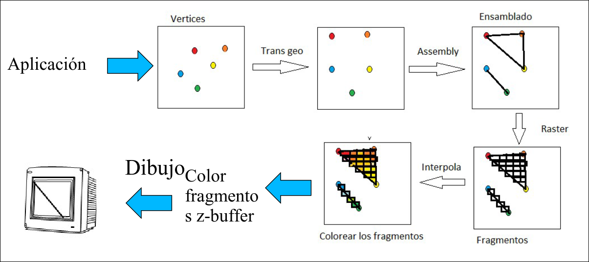
En el retained mode (Opengl 3.3) el fragment shader permite trabajar a muy bajo nivel sobre los fragmentos.
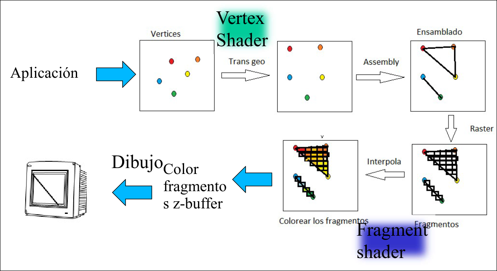
6.1 Introducción
Una textura es una colección o array n-dimensional de valores que se representan sobre la geometría de los objetos.
- Aumentan el realismo de la imagen sin incrementar el número de polígonos.
- Proporcionan una clave para la percepción de la profundidad.
- Permiten simular muchos efectos: sombras, entornos, etc.
- Ocupan Memoria
Tipos de Textura:
- 1D: imágenes sin alto, solo ancho
- 2D: imagenes bitmap ordinarias
- 3D: apilamientos de texturas. Ocupan mucha memoria
- Texturas procuderales: la imagen es calculada a partir de un algoritmo matemático.
- Ocupan poca memoria, pero consumen CPU
- Se pueden reescalar con facilidad, por lo que son útiles para superficies de cualquier tamaño.
- Ejemplos de mapas generados: geométricos, patrón repetitivo, ruido fractal, etc.
6.2 Texturizado
El texturizado consiste en superponer sobre los polígonos de un objeto una textura.
6.2.1 Texture Mapping
Crea una textura a partir de una imagen para aplicarla sobre la superficie, como si fuera una pegatina.
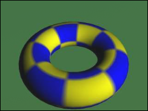
6.2.1 Bump Mapping
Perturba la superficie modificando las normales de las caras del objeto, pero sin cambiar su geometría. En sentido estricto puede no considerarse texturizado, es un tipo de mapeado topológico
- Las normales se calculan en función de un mapa de alturas (una matriz de datos
, generalmente una imagen). - Se combinan las normales con la geometría del objeto
- Se calcula el modelo de iluminación para esos nuevos valores de las normales.
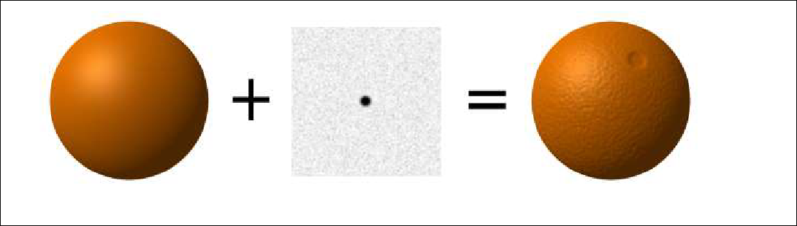
6.2.3 Environment Mapping
Mapea el entorno del objeto sobre su superficie.
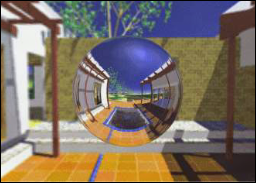
6.2.4 Light Mapping
El brillo de las superficies se calcula previamete y se almacena para aplicarse como mapa de iluminación sobre la superficie. Se suelen usar en objetos estáticos para proporcionar efectos de iluminación como los de la global con un coste muy bajo.
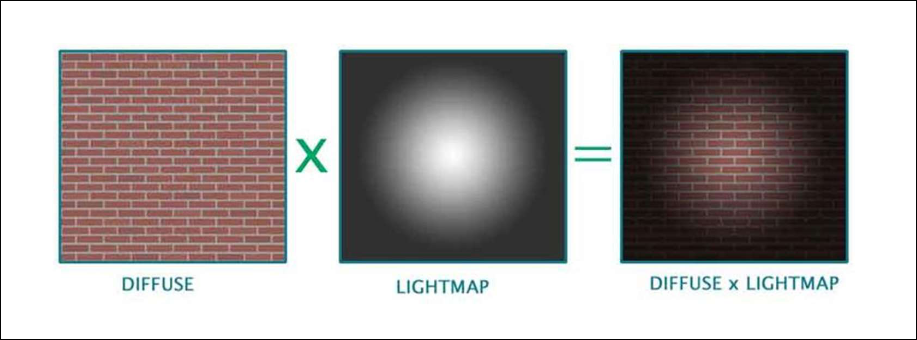
6.2.5 Displacing Mapping
Modifica la geometría de un objeto mediante un mapa de texturas, normalmente cambiando la dirección de las normales.
-
Genera una gran cantidad de geometría adicional
-
Es muy lento.
-
Se pueden generar sombras
-
Se pueden generar oclusiones
-
Se puede usar para sombreados
-
Geometry shader-> shader que se aplica después del vertex shader para generar geometría
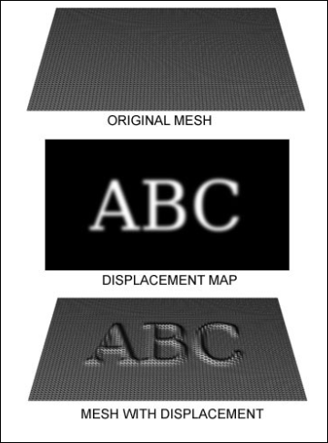
6.3 Mapeado de Texturas
El mapeado de texturas es la correspondencia de los puntos de la textura con los puntos de la superficie en la que se aplica. Tipos de mapeado:
- Mapeado directo: la textura se mapea directamente sobre el objeto
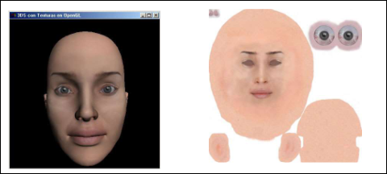
- Mapeado en dos fases: la textura se mapea sobre un objeto 3D y se proyecta sobre el objeto
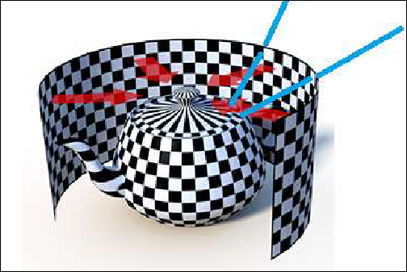
6.3.1 Mapeado Directo de Texturas
Una textura 2D se presenta como un patrón de datos 2D
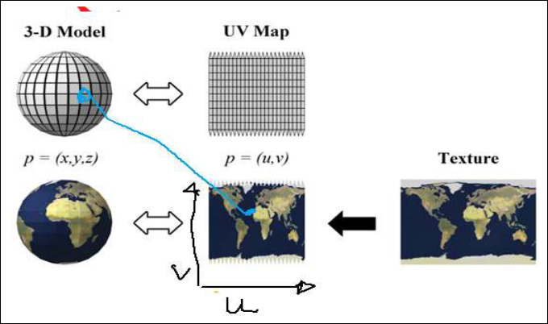
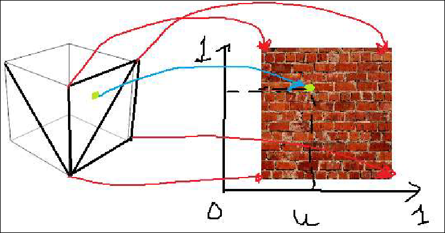
6.3.2 Mapeado de Texturas en OpenGL
- Habilitar el uso de texturas 1D, 2D o 3D.
- Activar la textura
- Almacenar en memoria, dando valores o leyendo un fichero
- Definir la textura
- Mapear la textura
Habilitar el Mapeado de Texturas
En el maino en el InitOpenGL: glEnable(GL_TEXTURE_2D): Si se quiere deshabilitar para que alguna superficie aparezca sin textura, con le color original: glDisable(GL_TEXTURE_2D)
Leer y Activar la Textura
void glGenTextures(GLsizei n, GLuint*textura)n: número de índices a creartextura: puntero al primer elemento del array donde se almacenan los índices creados.
void glBindTexture(GLenum target, GLuint texture)target:GL_TEXTURE_1DoGL_TEXTURE_2Dtexture: indice de la textura que se quiere enlazar (si se quiere no usar textura, 0).
glDeleteTextures(GLsizei num, const CLuint *nombres)
Almacenar en Memoria
Una textura se puede especificar como un array de texels, que se puede crear manualmente.
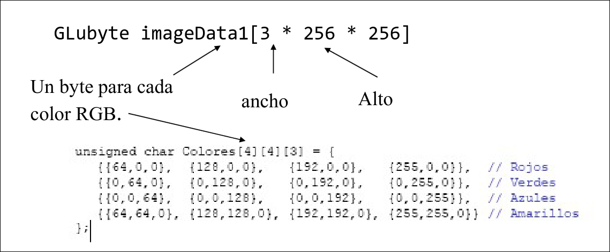
Normalmente, o bien se escribe un programa que la genere (texturas procedurales) o se lee de un fichero de imagen con la librería STB: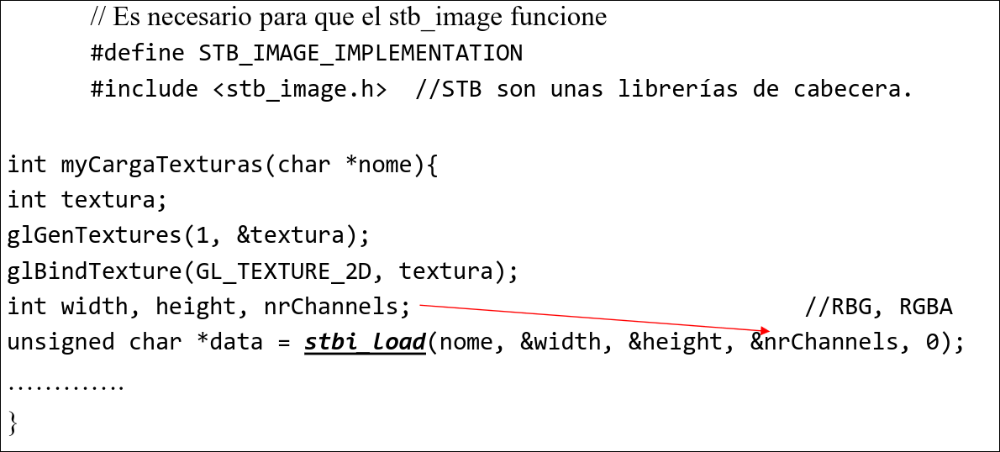
Definir la Textura
void glTextImage2D(objetivo, nivel, componentes, ancho, alto, borde, formato, tipo, *pixeles)
objetivo: indica cuál es la textura a definir (GL_TEXTURE_1DoGL_TEXTURE_2D)nivel: indica el nivel de detalle de las texturas, normalmente 0.componentes: indica el número de componentes de color usados en cada pixel.ancho: indica el ancho de la textura, que debe ser potencia de 2alto: indica el alto de la textura, que debe ser potencia de 2borde: indica el número de pixeles de borde que se usarán.formato: indica el tipo de valores esperados (normalmenteGL_RGB)tipo: indica el tipo de la variable que almacena los valores de color por pixel.pixeles: puntero a la variable que almacena los colores de cada pixel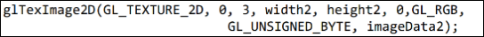
Pegar la Textura - OpenGL 1.2
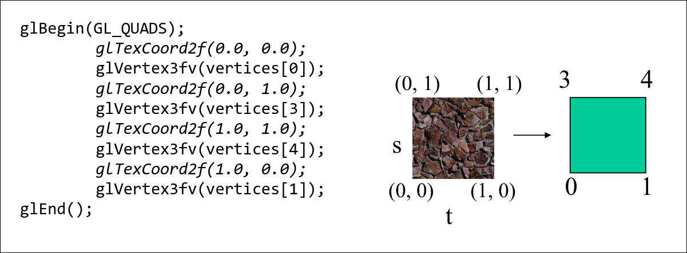
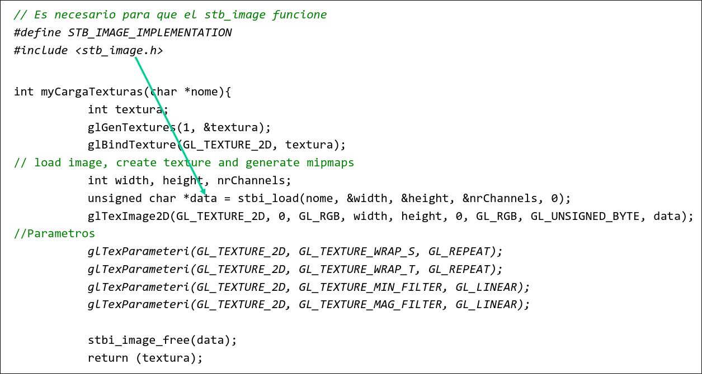
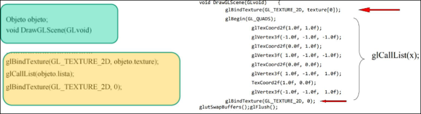
Con dos texturas: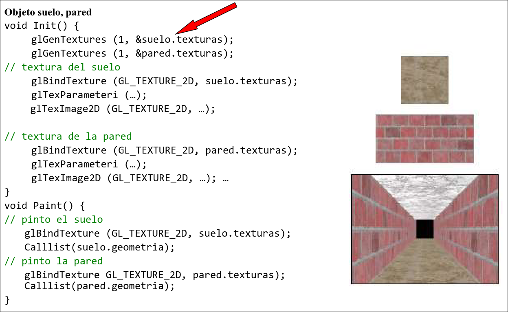
Pegar la Textura - Opengl 3.3
La carga es igual, pero hay que especificar las coordenadas de textura.
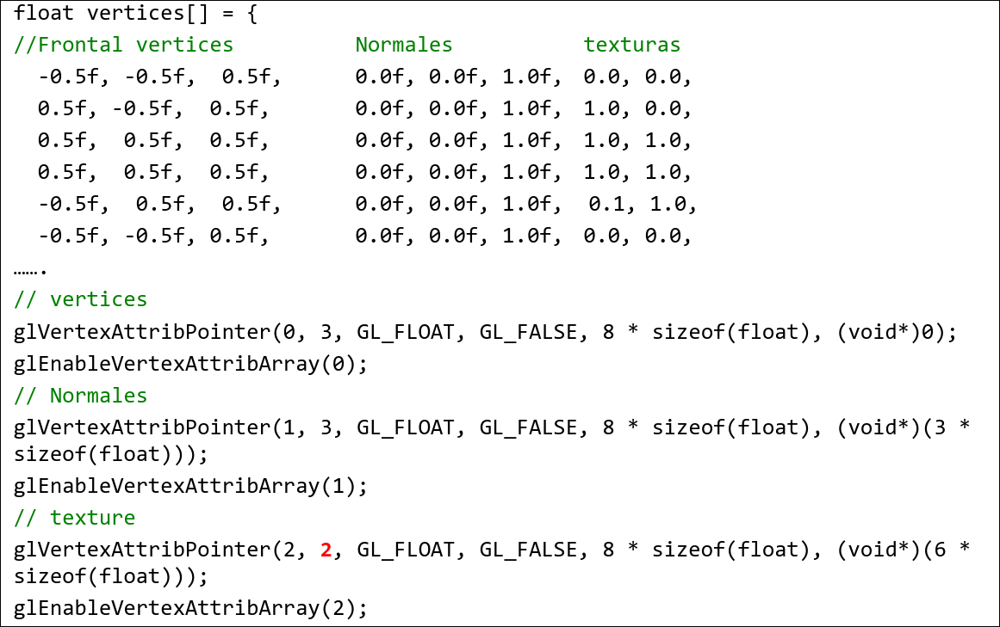
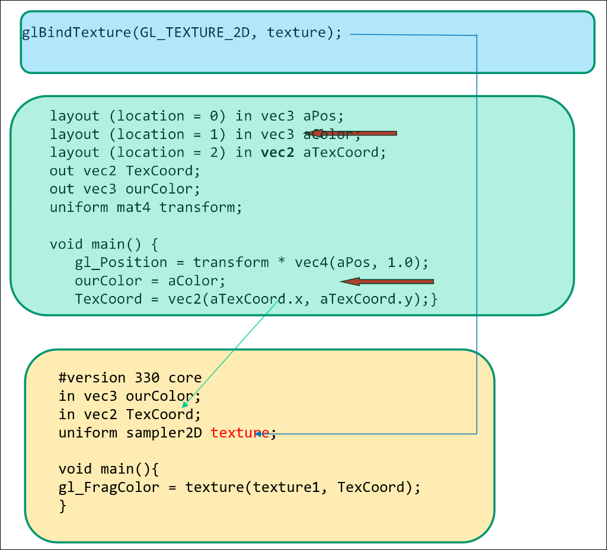
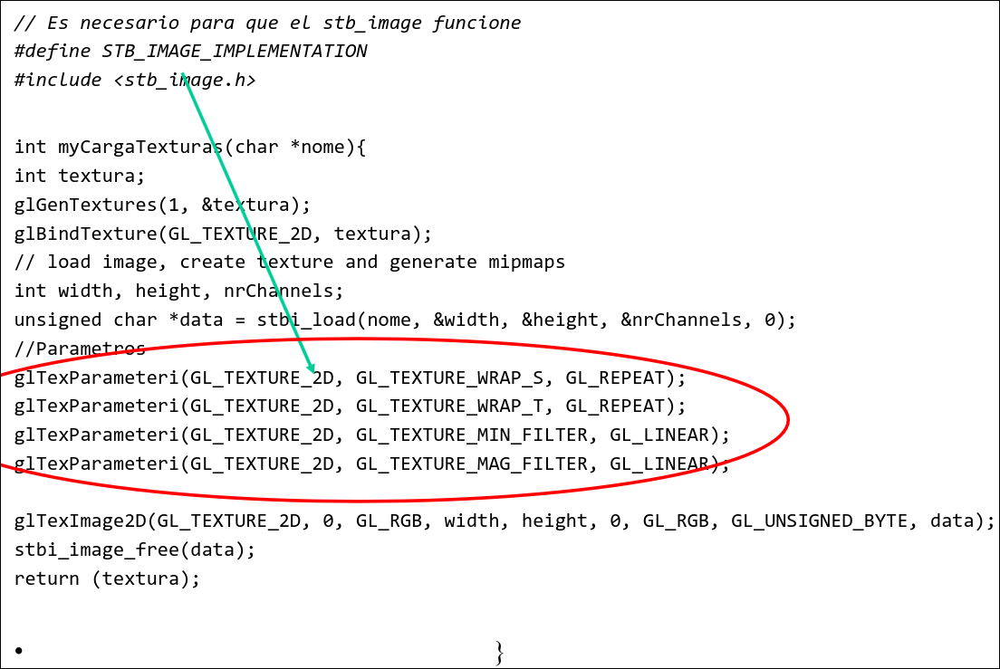
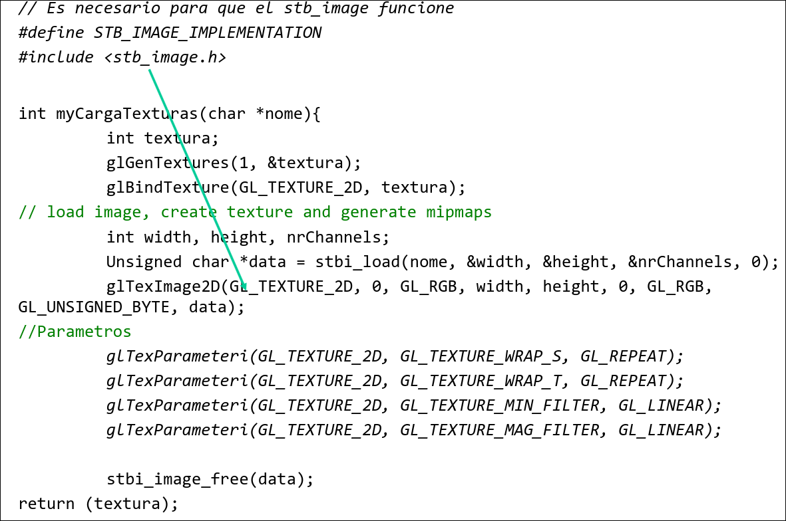
6.3.3 Mapeado Multicapa en Opengl 3.3
Se usan unidades de textura que permiten ir activando o desactivando las texturas manualmente
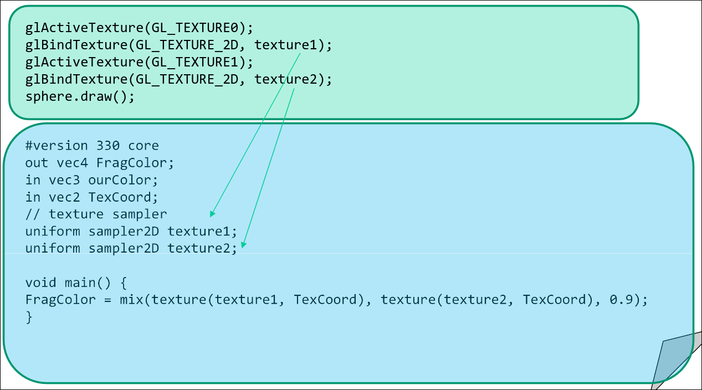
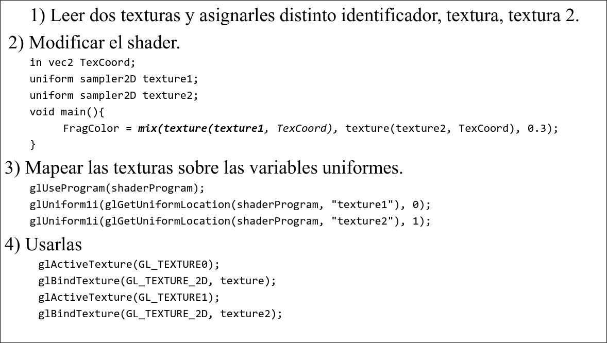
6.4 Parámetros de Texturas
Sobre el objeto: problemas de tamaño: qué hacer si la textura no abarca todo el objeto.
glTextParameteri(GL_TEXTURE_2D, GL_TEXTURE_WRAP_S/T, GL_REPEAT/CLAMP): especifica qué ocurre la si la textura no cubre los límites del objeto, puede repetirse (GL_REPEAT), o estirarse (GL_CLAMP). Debe llamarse dos veces, para la vertical () y para la horizontal ( ) 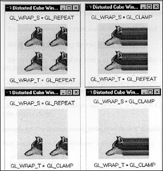
Sobre la pantalla: problemas de escala: qué hacer si al rasterizar, cada texel de la textura no se corresponde exactamente con un pixel de la pantalla.
glTextParameti(GL_TEXTURE_2D, GL_TEXTURE_MIN/MAG_FILTER, GL_LINEAR/NEAREST). Si la superficie es mayor que la textura, cada pixel se corresponderá con un trozo pequeño de texel: magnificación. Si la superficie es menor que la textura, cada pixel se corresponderá con un conjunto de texels contiguos: minificación.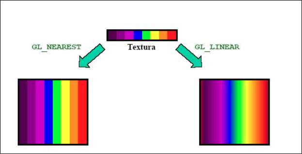
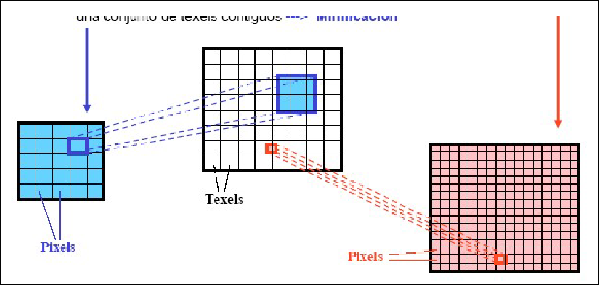
Mezclas: que hacer si el objeto tenía un color.
glTextEnvi(GL_TEXTURE_ENV, GL_TEXTURE_ENV_MODE, GLint valor): para establecer el modo RGBA dondevalorpuede ser (p=pixel,s=textura,c= entorno):GL_REPLACE:reemplaza el color del objeto por la textura. GL_MODULATE:se multiplica el color del objeto y el de la textura. GL_DECAL:sustituye teniendo en cuenta el canal Alpha GL_BLEND:multiplica el color del píxel por el color de la textura y del entorno un color elegido.
glTextEnvfv(GL_TEXTURE, GL_TEXTURE_ENV_COLOR, GLfloat color[4])para enviar el color.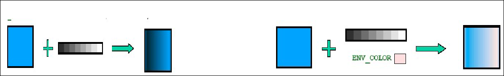
6.5 Transparencia
Blending: la forma más sencilla de hacer una transparencia es mediante la técnica de puerta o ventana transparente. Se usa una ecuación de la forma
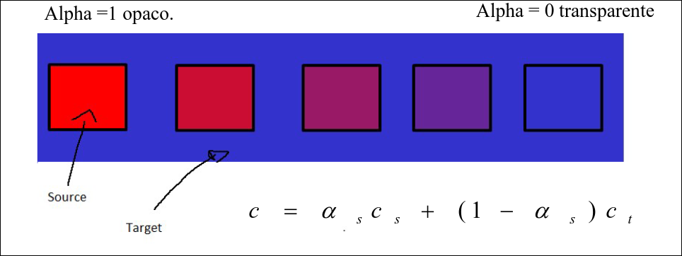
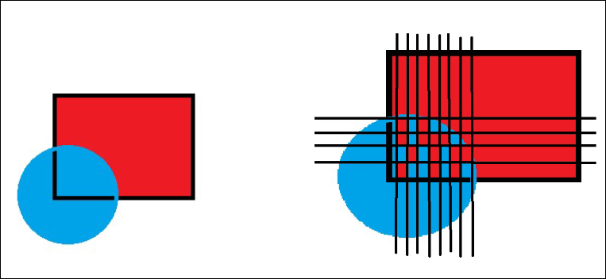
El modelo RGBA acepta el valor alpha. Para ellos las texturas o color deben tener un alpha, por ejemplo .png o .gifa. Se habilita con glEnable(GL_ALPHA_TEST).
El alpha test compara el valor del fragmento con un valor de referencia. Por defecto, este valor es el 0 y la comparación se hace entre 0 y 1.
glAlphaFunc(GLenum func, GLclamp ref)dondefuncpuede serGL_NEVER,GL_LESS,GL_EQUAL,GL_LEQUAL,GL_GREATER,GL_NOTEQUALoGL_ALWAYS(por defecto).
Para cualquier otro elemento de color RGBA:
glEnable(GL_BLEND)glBlendFunc(GL_SRC_ALPHA, GL_ONE_MINUS_SRC_ALPHA)
Nosotros trabajaremos con texturas que tengan ya incorporado canal Alpha, por lo que tendremos en cuenta el número de canales, por lo que hay que incluir este número en la función de lectura.
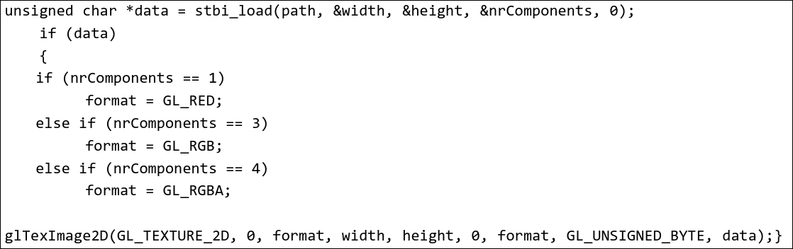